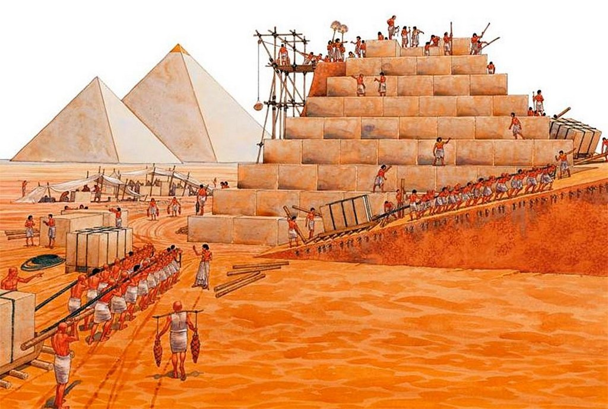
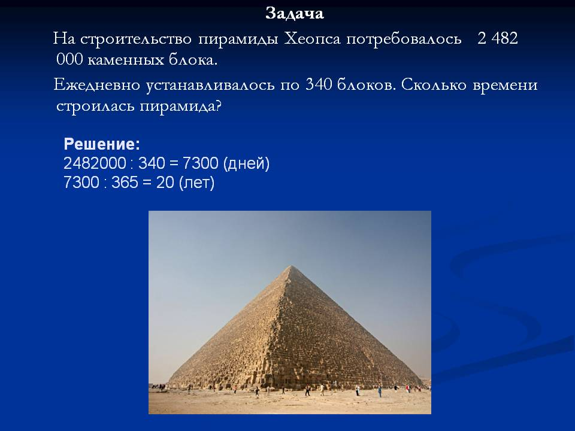

Пирамида
Пирамида Хеопса
Египетская пирамида Хеопса — одно из Семи чудес света, единственное сохранившееся до наших дней, она возвышается на плато Гиза неподалеку от Каира. Она является самой высокой из комплекса пирамид, расположенных на плато. Строение поражает своими масштабами, сложно представить, как люди примерно 4500 лет назад, имея в своем распоряжении только примитивные инструменты, смогли выстроить такой шедевр.Количество объектов, идентифицируемых как египетские пирамиды, варьируется от 118 до 138 по данным ноября 2008 года. Большая часть пирамид была построена в качестве усыпальниц для фараонов Древнего и Среднего царств. Древнейшие из известных пирамид находятся в Саккаре. Самой древней считается пирамида Джосера, построенная архитектором Имхотепом в период с 2667 по 2648 гг. до н. эамые известные пирамиды находятся на окраине Каира в Гизе, три из которых до сих пор являются одними из крупнейших сооружений, когда-либо построенных человеком. Пирамида Хеопса является самой большой пирамидой в Египте и входит в число Семи чудес света.

Кто создал пирамиду Хеопса?
Хемиун, визирь и племянник Хеопса Архитектором Великой пирамиды считается Хемиун, визирь и племянник Хеопса. Он также носил титул «Управляющий всеми стройками фараона». Предполагается, что строительство, продолжавшееся двадцать лет (время правления Хеопса), закончилось около 2540 года до н. э. Существующие методы датирования времени начала строительства пирамиды делятся на исторические, астрономические и радиоуглеродные.
Зачем была создана пирамида Хеопса?
Ее назначение — сохранить фараона для вечности. Это огромный сейф для мумии и сокровищ. Большинство артефактов Древнего Египта предназначалось для загробной жизни. Эти сокровища стали бы отличной добычей для любого расхитителя гробниц. Поэтому бальзамировщики писали молитвы, защищающие мумий. Специальные защитные молитвы. Хеопс мог полагаться не только на молитвы и проклятия, чтобы отпугнуть грабителей.
Галерея